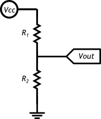
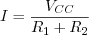
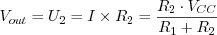
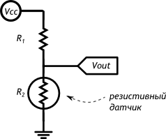
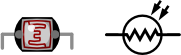
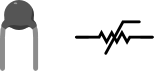

Последовательно подключённые резисторы делят поступающее на них напряжение в определённой пропорции.
Простейший делитель напряжения - это схема, которая для данного напряжения на входе создает на выходе напряжение, которое является некоторой частью входного.

Сила тока, протекающая через резисторы одинакова, т.к. они соединены последовательно, и по закону Ома может быть рассчитана как:

По тому же закону Ома можно вычислить напряжение Vout, которое падает на резисторе R2:

Из полученной формулы видно, что чем больше R2 относительно R1, тем большее напряжение падает на нём.
Если вмето R2 использовать не постоянный резистор, а датчик, который меняет своё сопротивленивление, Vout будет зависеть от измеряемого значения.
Таким образом, мы можем использовать свойства делителя напряжения для получения показаний от сенсора.
Фоторезистор
Фоторезистор (англ. Light Dependent Resistor или сокращённо LDR) изменяет своё сопротивление в зависимости от силы света, попадающего на его керамическую «змейку»
Термостор
Термистор изменяет своё сопротивление в зависимости от собственной температуры
Потенциометр
Потенциометр ещё называют переменным резистором, триммером. Это делитель из двух резисторов в одном корпусе. Поэтому у него 3 ноги: питание, выход, земля.
Соотношение R1 и R2 меняется поворотом ручки. От 100% в пользу R1 до 100% в пользу R2.
Упражнение 1.1. Рассчитайте величину сопротивления для подключения элемента 3.3 вольта к источнику питания 5 вольт
Упражнение 1.2. Подберите сопротивление для подключения элемента 2.5 вольта к источнику питания 12 вольт